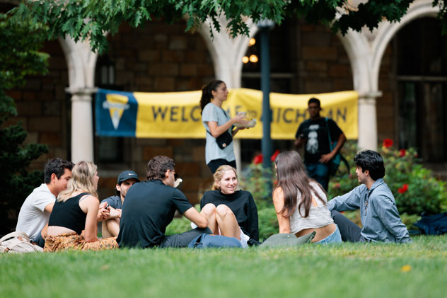

About CAPS
CAPS is a service under University Health & Counseling (UHC). UHC supports the health and well-being of the campus community. CAPS focuses on the mental-health of students by offering in-person and virtual counseling, focusing on multicultural, multi-disciplinary practices. Below is a guide to the resources CAPS provides.
- Clinical Services
- Outreach and Community Engagement
- Training Programs
- Especially For...
- Resources

Clinical Services
CAPS offers a variety of confidential psychological services to U of M students. These services include:
- Individual and Relationship Counseling: Personalized counseling sessions addressing individual concerns and relationship dynamics.
- Groups, Lunch Series, & Workshops: Facilitated group sessions and workshops on various mental health topics.
- Uwill Teletherapy Services: Access to licensed mental health professionals via video, phone, chat, and messaging at no cost.
- In-Depth Clinical Screenings: Comprehensive assessments for issues like eating disorders, substance abuse, and ADHD.
- Trauma-Informed Services for Survivors of Sexual Violence: Support services tailored for survivors, utilizing a trauma-informed approach.
- Eating and Body Image Services: Specialized support for students dealing with eating disorders and body image concerns.
- Gender Affirming Services for Trans/Nonbinary Students: Services designed to support the mental health and well-being of trans and nonbinary students.
- Crisis Services: Immediate support for students experiencing urgent mental health situations.
- Care Management and Referral Services: Assistance in connecting students with appropriate resources and external providers as needed.
Outreach and Community Engagement
Counseling and Psychological Services (CAPS) engages in outreach and community engagement to promote mental health awareness, education, prevention, and stigma reduction, to foster a supportive campus environment.
Training Programs
CAPS offers training programs such as APA Accredited Doctoral Internship, Outreach and Education Social Work Internship, Post Graduate Fellowship, Psychology Practicum, and Social Work Internship.
Especially For...
This section provides tailored resources and guidance for specific groups within the university community, including parents and loved ones, faculty and staff, graduate students, and student organization leaders.
Resources
Resources that CAPS offers includes:
- On-Campus Treatment Resources
- MiTalk Self-Help Resources
- Online Screenings
- Community Provider Database
- Wellness Zone